Screens
Every screen at a glance. For the full button list see Controls.
Song

The arrangement. Columns are the 8 tracks, rows are time. Each cell holds a chain number, or -- for nothing.
- Everything on one row starts together.
- Rows play top to bottom; each track loops back to the top of its block when it reaches
--. - While playing, the strip at the bottom shows each track's current note and instrument.
- The eight thin bars to the right of the grid are level meters, one per track: the track you're on is highlighted, muted tracks go dim, and a bar gets an amber cap when it's close to full.
Bookmarks and sections
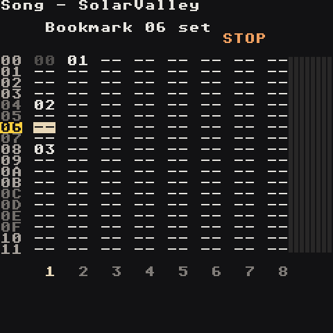
A + Select bookmarks the row the cursor is on (again: removes it). A bookmarked row's number turns into an amber tag. LB + Up/Down jumps to the next or previous place a part starts: a bookmark, or the first chain of a block on the track you're on (a chain right under an empty cell). The screen says which it found (Bookmark 20, Section 10). Bookmarks are saved with the song, and B + Select undoes them like any edit.
Moving tracks
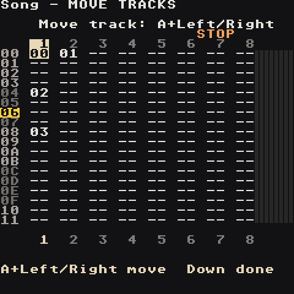
On row 00, press Up once more: the title says MOVE TRACKS and the track numbers appear above the grid. Left/Right picks a track, A + Left/Right carries it past its neighbour, with its chains on every row, its mixer fader and its mute. Down (or B) goes back to the grid. Stop the song first; the screen tells you if it's playing.
Live mode
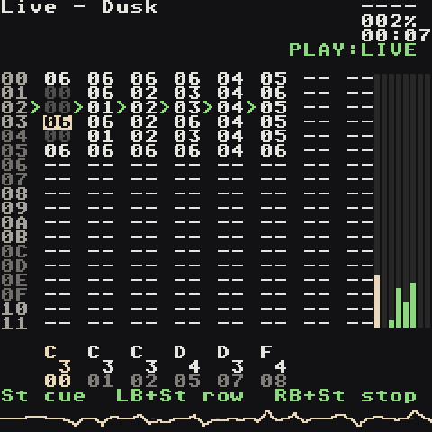
Select turns the Song screen into a clip launcher. Start on a cell cues that chain on its track (it blinks green until it starts, then loops), LB + Start cues the whole row, RB + Start cues a track to stop, B + Start stops everything. The buttons are listed at the bottom of the screen. Full table: Controls → Live mode.
Chain

One track's playlist of bars. Left column: phrase number. Right column: transpose in semitones (0C = up an octave, F4 = down an octave).
Next to each row is a tiny piano roll of that row's phrase, so you can see the melody or rhythm of every bar without opening it. The row that's playing lights up, with a playhead moving across it.
Phrase

One bar, 16 steps. Columns:
- Note —
C 3,----for none - Instrument —
I00…I7F; the name of the instrument under the cursor shows in the title - Command 1 + value
- Command 2 + value
Step numbers are one digit, 0–F. Beat rows (0 4 8 C) are highlighted so you can see the grid, and the playing step lights up as a green tab.
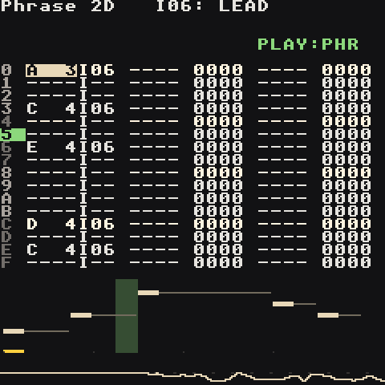
Under the grid is a piano roll of the whole bar: each note sits at its pitch, with a thin line until the next note or KILL. A playhead follows playback and an amber mark shows the step your cursor is on. The line at the very bottom is a live waveform of the output.
Instrument (synth)


Seven pages (SOUND, ENV, FILTER, LFO, MOD, MIX, EQ), switched with LB + Left/Right. The top half draws what the page does — waveform, envelope, filter curve, LFO, modulation, levels, EQ curve — and shows the preset name and the focused value in real units (32 ms, 641 Hz). The knobs are listed below. Full details on the Synth page.
The first row, type, switches the slot between synth, sample and macro — the Macro Synth: 47 synthesis models played with two knobs, timbre and color. It has the same pages; SOUND and the 4th page (MOTION) are its own.
Instrument list
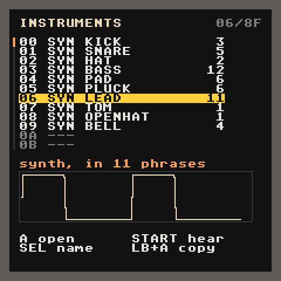
RB + Up on the Instrument screen opens every instrument at once: number, type (SMP, SYN, MAC, MID, --- for an empty slot), name, and how many phrases use it. A green dot marks instruments that are playing right now, and the box underneath draws the selected sound: a sample's waveform, a synth's wave shape, or a macro synth's model output.
| Button | Does |
|---|---|
| Up / Down | pick an instrument (Left/Right jump a page) |
| A | open it on the Instrument screen |
| Start | hear it; Start again stops |
| Select | give it a name with the on-screen keyboard (clear the name to go back to the automatic one) |
| LB + A | copy it into the next free slot, to make a variation |
| B | back |
Instrument (sample)
Sample instruments have seven pages too: Source, Shape, Filter, Loop, Mod, Motion, EQ, with a waveform and start/loop/end markers. See Samples.
Table
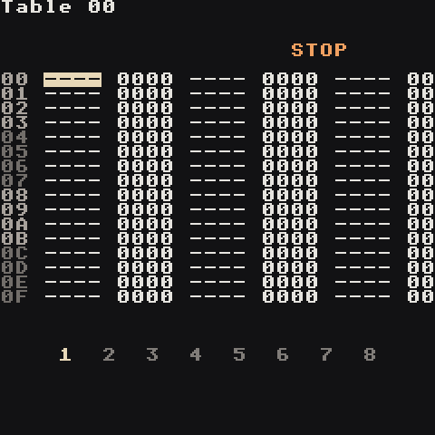
Three command columns that step one row per tick and loop. Tables run on their own once triggered — by TABL in a phrase, or automatically by an instrument (table on the synth LFO page or the sample Motion page). Use them for arpeggios, stutters, pitch wobbles and filter wiggles you don't want to write note by note.
Groove
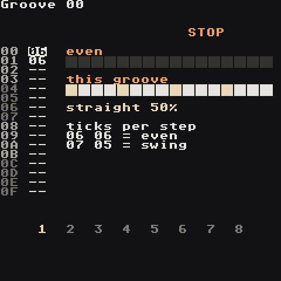
How many ticks each step lasts, cycling. 06 06 is straight. 07 05 swings (long-short). 08 04 shuffles hard. Groove 00 is used by default; the GROV command switches a track to another groove.
The ruler on the right draws one bar twice: an even grid on top, and this groove underneath with each step as wide as its ticks. Late offbeats are the swing. Under it the feel is named in plain words (straight, swing 58%), and the step that's playing turns green.
Project

| Field | What |
|---|---|
| Tempo | BPM |
| Master / Drive | output level / level into the soft clipper |
| Clip | soft clipper strength (Bypass … Insane) |
| Transpose | shifts every note in the song |
| Key / Scale / Notes | note-editing helper and sharp/flat spelling; RB + Right shows them on a keyboard (Scale) |
| Song List / Save Song / Save Song As | back to the song list (offers to save first), save, save a copy |
| Remove unused chains / sounds | tidy up chains, phrases and instruments nothing uses |
| Quit | leave the app (offers to save first) |
| Render | Stereo or Stems, then Start to export (Export) |
Scale
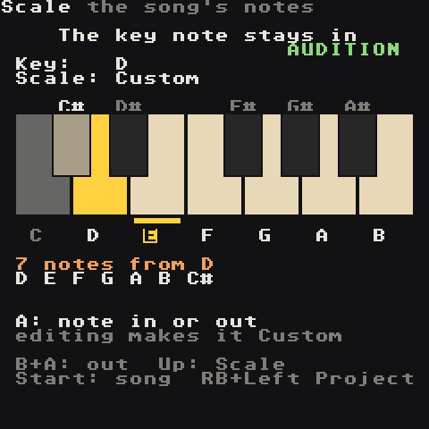
RB + Right from Project. The song's Key and Scale on top, one octave of piano keys below: the notes of the scale are lit, the key note is amber. Under the keyboard the scale is spelled out (7 notes from D, D E F G A B C#).
- Up/Down moves between
Key,Scaleand the keyboard; A + D-pad changes Key and Scale as on Project. - On the keyboard, Left/Right picks a note and A puts it in or out of the scale (you hear it when it goes in). B + A takes it out. The key note always stays in.
- Editing a scale makes it the song's own
Customscale (the last one in the list), starting from the notes of the scale you had. It is saved with the song and moves with the Key. - Phrase note editing (A + Left/Right), the random-notes tool (LB + Right on a selection) and
RANDall stay on the lit keys. TheSCALcommand switches Key and Scale while the song plays (Commands).
Mixer

Faders for the 8 tracks, the three effect returns (C chorus, D echo, R reverb) and the master (M), each with a live level meter, plus the master waveform. Levels save with the song. When the limiter is on, a white line hangs from the top of the master meter as long as it is limiting (12 dB = half the meter), and the master line reads LIM -3.2dB.
| Input | Does |
|---|---|
| Left/Right | pick a strip |
| A + Up/Down | fader big step (C0 = unity, up to FF for a boost) |
| A + Left/Right | fader fine step |
| B + RB / A + RB | mute / solo the track (RB + LB unmutes all) |
| RB + Down | FX screen |
FX
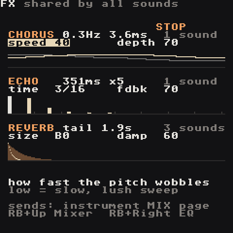
The three effects every instrument can send to, each with a picture of what it does (RB + Right goes on to the EQ):
| Effect | Knobs | Picture |
|---|---|---|
| Chorus | speed (0.1–5 Hz), depth (0.5–7.5 ms) |
the left and right delay sweeps |
| Echo | time in 16ths (3 = dotted 8th), fdbk repeats |
the dry hit and each echo over two bars |
| Reverb | size, damp |
the tail over four seconds; the bright line is the highs, which damp takes away faster |
Each heading shows the real values (Hz, ms, tail length) and how many sounds send to it. Up/Down walks the six knobs, A + D-pad edits. Turn up an instrument's chorus/delay/reverb send to hear it; the Mixer's C/D/R faders set how loud each effect comes back.
EQ
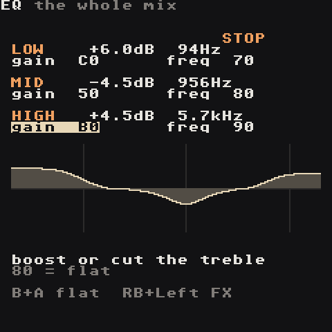
A three-band EQ on the whole mix, after the effects: RB + Right from FX.
| Band | Knobs | Shape |
|---|---|---|
| LOW | gain, freq (30–400 Hz) |
a shelf: everything below freq up or down |
| MID | gain, freq (150 Hz–6 kHz) |
a wide bell around freq |
| HIGH | gain, freq (1.5–16 kHz) |
a shelf: everything above freq |
gain 80 is flat; each step is about 0.1 dB, from −12 to +12 dB. The heading shows the real values, and the curve underneath shows the result from 20 Hz to 20 kHz (marks at 100 Hz, 1 kHz, 10 kHz). Up/Down picks a knob, A + D-pad edits, B + A puts a knob back. It saves with the song; a flat EQ costs nothing.
Try: low +3 dB at 80 Hz for weight, mid −3 dB at 400 Hz to clear mud, high +2 dB at 8 kHz for air.
RB + Right goes on to the limiter. Every instrument also has an EQ of its own, on its EQ page.
Limit
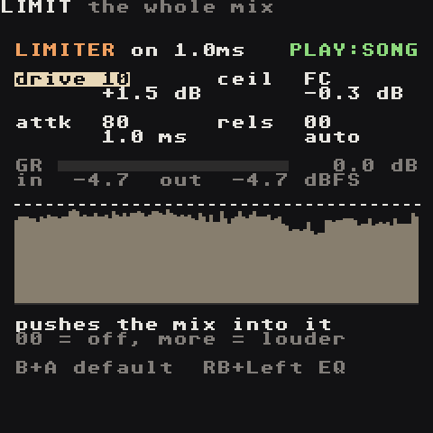
The master limiter, RB + Right from EQ (like the M8's LIM): it keeps the whole mix under a ceiling, so you can make it louder without it clipping. It comes after the EQ; the Project's clip (soft clip) and master volume come after it.
| Knob | Does | Values |
|---|---|---|
drive |
pushes the mix into the limiter | 00 = off (the default), 01 = 0 dB .. FF = +25.4 dB |
ceil |
the loudest the mix may get | 00 = −25.5 dB .. FF = 0 dB, default FC = −0.3 dB |
attk |
how far it looks ahead: the gain is already down when a peak arrives | 0.1–10 ms, default 80 = 1 ms |
rels |
how fast it lets go afterwards | 00 = auto (100–900 ms: slower the harder it works), 01 = 4 ms .. FF = 1 s |
Under the knobs, the red GR bar shows how many dB it is taking off right now, with the peak going in (after drive) and coming out. The scope below scrolls the last few seconds: the mix level rises from the bottom, the limiting hangs from the top in red, the dotted line is the ceiling.
Up/Down picks a knob, A + D-pad edits, B + A puts a knob back (drive back to off), RB + Left returns to EQ. With drive 00 the mix passes untouched; switched on, it delays the whole mix by the look-ahead (1 ms by default).
Try: drive +3 to +6 dB with rels on auto. A few dB of GR on the loudest hits is transparent; if it pumps, lower drive or lengthen rels.
Helper (RB + Select)

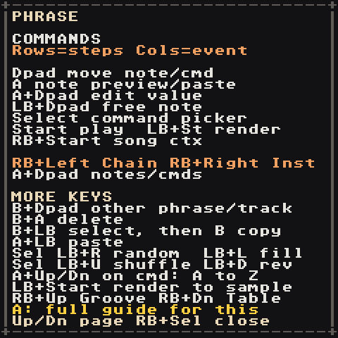
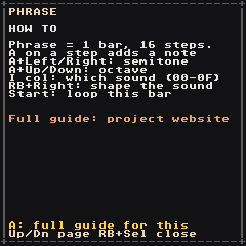
Available on every screen, including dialogs. Down/Up flips between:
- Map — where you are and where RB + direction goes, plus the undo keys
- Commands — the buttons for this screen, then MORE KEYS with the rest. On the synth pages it also explains the knob under the cursor.
- How to — a short walkthrough for this screen
On any page, A opens the built-in guide at the section for the current screen.
While the helper is open, other buttons are ignored, so you can't change anything by accident.